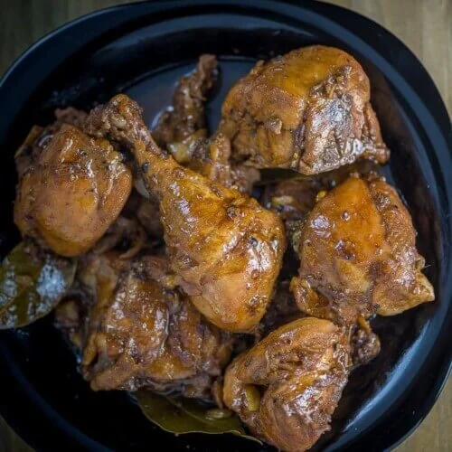

Chicken Adobo

Description
What is this is Adobo. Adobo is marinating a food in soy sauce, vinegar, bay leaves, and black peppercorns. Pork
can also be used, though we will be using chicken today. Chicken Adobo is one of first dishes I learned to cook
since it's easy. Though it can also be hard to please a Filipino since every Filipino family has their own way
of cooking it.
Ingredients
- Chicken
- Soy Sauce
- Bay Leaves
- Peppercorn
- Garlic
- Onion
- Vinegar
- Sugar
Directions
- Mix Soy Sauce, Vinegar and 3 cushed clove of Garlic in a deep bowl and marinate the chicken part in it for
at least an hour. Marinating it for overnight would be better.
- Heat a pot, and put a little bit of oil on it.
- Mince garlic and onion.
- Grab your tongs and put the marinated chicken on the pot one by one. Cooking chicken adobo this way means
the skin of the chicken will not disintegrate.
- Put the minced garlic and onion in the pan now. Wait for the onion to be translucent.
- Pour the marinade in and wait for it to boil.
- Add the bay leaves and the peppercorn.
- Add additional soy sauce, vinegar or sugar for taste. Balance the taste, this will depend on your taste.
- Serve